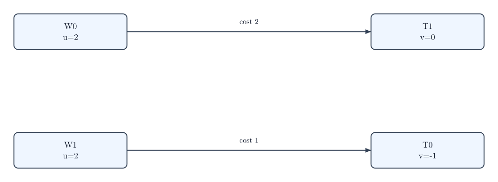
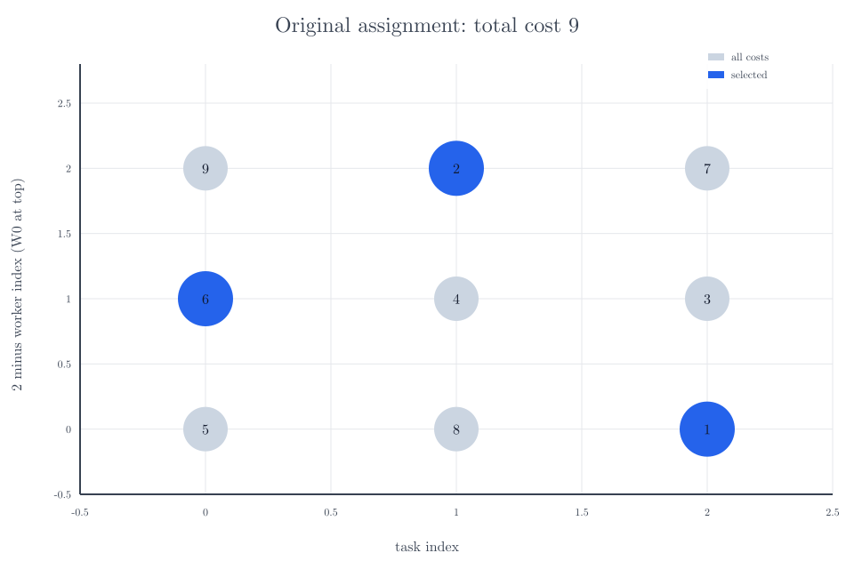
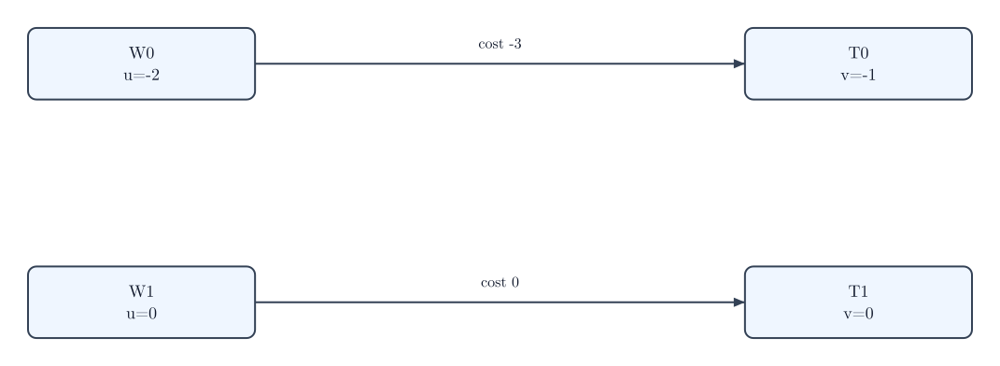
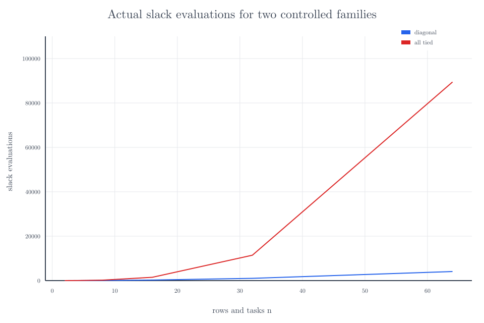

Hungarian Assignment: Prices, Paths and an Optimality Check
Abstract
A worker's cheapest task may already belong to another worker. The Hungarian method resolves this conflict by repricing an alternating search and then flipping an augmenting path. We start with a two-worker example that must reassign its first choice, preserve the original three-worker example, and check the final permutation against row/column dual prices. Negative costs, ties, arithmetic limits and complete history admission are explicit. Every history comes from the solve that produced the answer; no path is replayed.
Start with a conflict
For costs \(C=((1,2),(1,100))\), both workers prefer task zero. The first row initially takes it, but keeping that choice would cost 101. The optimum sends worker zero to task one and worker one to task zero, costing three. Task boxes in the diagram are reordered to align the final matched pairs; printed labels retain their original indices. The event table shows the actual reprices and completed augmentations, including the second search's zero delta and final positive delta. A zero delta can expose an already-tight edge; it is not a stop.
#include <dm/dm.hpp>
int main() {
std::filesystem::create_directories("build");
const auto t = dm::algorithms::hungarian_trace({{1, 2}, {1, 100}});
std::print("| boundary | introduced row | expanded row | next task | delta | task 0 owner | task 1 " "owner |\n| --- | ---: | ---: | ---: | ---: | ---: | ---: |\n");
for (const auto &e : t.events) {
auto owner = [&](std::size_t j) {
return e.column_to_row[j] == dm::algorithms::kAssignmentUnmatched
? std::string("free") : std::to_string(e.column_to_row[j]);
};
std::print("| {} | {} | {} | {} | {} | {} | {} |\n",
e.kind == dm::algorithms::AssignmentEventKind::Reprice
? "reprice" : "augment", e.introduced_row, e.expanded_row,
e.next_column, e.delta, owner(0), owner(1));
}
const auto d = dm::algorithms::assignment_diagnostics(t.costs, t.run);
std::print("Primal {}, dual {}, gap {}, minimum slack {}, matched residual {}.\n",
d.primal, d.dual, d.gap, d.minimum_slack,
d.maximum_matched_residual);
dm::algorithms::assignment_diagram(t.costs, t.run).save_svg(
"build/hungarian_tiny.svg");
}| boundary | introduced row | expanded row | next task | delta | task 0 owner | task 1 owner |
|---|---|---|---|---|---|---|
| reprice | 0 | 0 | 0 | 1 | free | free |
| augment | 0 | 0 | 0 | 0 | 0 | free |
| reprice | 1 | 1 | 0 | 1 | 0 | free |
| reprice | 1 | 0 | 1 | 1 | 0 | free |
| augment | 1 | 0 | 1 | 0 | 1 | 0 |
Primal 3, dual 3, gap 0, minimum slack 0, matched residual 0.

Why prices certify an assignment
A permutation \(\pi\) chooses exactly one task for each row. Its cost is \(P=\sum_i c_{i,\pi(i)}\). Introduce prices \(u_i,v_j\) obeying \(u_i+v_j\le c_{ij}\). For every permutation,
If every selected edge is tight, \(c_{i,\pi(i)}=u_i+v_{\pi(i)}\), the inequality
is equality: the assignment attains a lower bound for every other permutation.
This elementary weak-duality argument is enough for an exact optimality
certificate; no general linear-programming solver is needed.
assignment_diagnostics computes the primal, dual, their signed gap, the
minimum slack over all cells and the largest absolute matched-edge slack. These
are floating diagnostics, not an exact certificate for arbitrary real input.
The compact kernel starts with zero prices and adds rows one at a time. In a search let S be its reached rows and T its expanded real columns. It stores the smallest slack to each column outside T and chooses their minimum delta. Add delta to prices of S and subtract it from prices of T. Slack on S×T is unchanged; slack from S to outside T decreases by delta and stays nonnegative; slack from outside S into T increases by delta. An exposed tight column either leads to its matched row or ends an augmenting path. Flipping that path adds one matched row without losing tightness.
For nonnegative costs the zero initialization is globally feasible. With negative costs, zero prices can violate an unintroduced row. The correct invariant is feasibility for the completed prefix. The newly introduced row's first delta may be negative; its first repricing makes that row feasible too. Later deltas are nonnegative in exact arithmetic. The prefix then grows by one. The table below deliberately includes a negative first delta; it is valid.
Preserve the original three-worker example
The original costs are \(((9,2,7),(6,4,3),(5,8,1))\). The answer remains \(\pi=(1,0,2)\), costing nine. The runner-up permutation costs ten. Individually cheapest choices collide at task two for workers one and two, which explains why separate row minima do not solve the constrained problem. The figure prints every original cost and highlights the selected cells.
#include <dm/dm.hpp>
int main() {
std::filesystem::create_directories("build");
const auto c = dm::algorithms::assignment_example_costs();
const auto r = dm::algorithms::hungarian_run(c);
std::print("| worker | selected task | selected cost | row price |\n| ---: | ---: | ---: | ---: |\n");
for (std::size_t i = 0; i < c.size(); ++i)
std::print("| {} | {} | {} | {} |\n", i, r.result.assignment[i],
c[i][r.result.assignment[i]], r.row_potentials[i]);
const auto d = dm::algorithms::assignment_diagnostics(c, r);
std::print("Primal {}, dual {}, gap {}, minimum slack {}, matched residual {}.\n",
d.primal, d.dual, d.gap, d.minimum_slack,
d.maximum_matched_residual);
auto p = dm::graphics::RPlot::create();
std::vector<double> x, y, sx, sy;
for (std::size_t i = 0; i < c.size(); ++i) {
for (std::size_t j = 0; j < c.size(); ++j) {
x.push_back(j);
y.push_back(2. - i);
}
sx.push_back(r.result.assignment[i]);
sy.push_back(2. - i);
}
p.points(x, y, "all costs", {203, 213, 225}, 25).points(sx, sy, "selected",
{37, 99, 235}, 31);
for (std::size_t i = 0; i < c.size(); ++i)
for (std::size_t j = 0; j < c.size(); ++j)
p.text(j, 2. - i, std::format("{:g}", c[i][j]), {15, 23, 42}, 16);
p.title("Original assignment: total cost 9").x_label("task index").y_label(
"2 minus worker index (W0 at top)").x_limits(-.5, 2.5).y_limits(-.5, 2.8).save_svg("build/hungarian_original.svg");
}| worker | selected task | selected cost | row price |
|---|---|---|---|
| 0 | 1 | 2 | 4 |
| 1 | 0 | 6 | 6 |
| 2 | 2 | 1 | 4 |
Primal 9, dual 9, gap 0, minimum slack 0, matched residual 0.

Negative costs, limits and ownership
The next example starts with a negative minimum. Finite negative values are supported without shifting or rescaling the matrix; maximizing a finite value matrix can be done by negating its entries and reversing the total sign. Ties use ascending column order and strict-less updates, preserving the old choice rule, but the returned optimum need not be unique.
Input is nonempty, square and entirely finite. NaN and infinity are rejected before the search. They are not forbidden-edge markers. Nonfinite produced slack, potentials, frontier updates or row-order total throw rather than return a damaged result or leave the search without a valid next column. Large finite inputs can therefore fail even when their abstract assignment has an optimum; this solver neither rescales automatically nor supplies exact rational arithmetic.
AssignmentOptions defaults to one million complete input cells and one million
logical history entries. Zero disables the respective optional cap. Every event
costs 1+4n entries: one event plus the row prices, column prices, column owners
and reached-column flags. The complete event is admitted before its producing
scan/reprice or path flip. Units exclude the owned input copy,
ordinary/transient arrays, final outputs, vector capacity, scalar metadata and
byte/peak memory. An exception returns no partial history. The legacy
hungarian entry point disables both optional caps; hungarian_run ignores the
history cap. Trace data own their values and do not borrow the source matrix.
#include <dm/dm.hpp>
int main() {
std::filesystem::create_directories("build");
const auto t = dm::algorithms::hungarian_trace({{-3, 2}, {-1, 0}});
const auto d = dm::algorithms::assignment_diagnostics(t.costs, t.run);
std::print("| control | observed |\n| --- | --- |\n| negative first delta | {} |\n| final primal | {} " "|\n| final dual | {} |\n| final gap | {} |\n",
t.events.front().delta, d.primal, d.dual, d.gap);
const std::size_t units = t.events.size() * 9;
(void) dm::algorithms::hungarian_trace(t.costs, {4, units});
std::print("| exact complete event units | {} |\n", units);
try {
(void) dm::algorithms::hungarian_trace(t.costs, {4, units - 1});
throw std::runtime_error("cap accepted");
} catch (const std::length_error &) {
std::print("| one-short history cap | rejected |\n");
}
try {
(void) dm::algorithms::hungarian({{std::numeric_limits<double>::infinity()}});
throw std::runtime_error("infinity accepted");
} catch (const std::invalid_argument &) {
std::print("| infinite input | rejected |\n");
}
const auto tie = dm::algorithms::hungarian({{0, 0}, {0, 0}});
std::print("| all-zero tie assignment | {} {} |\n", tie.assignment[0],
tie.assignment[1]);
dm::algorithms::assignment_diagram(t.costs, t.run).save_svg(
"build/hungarian_controls.svg");
}| control | observed |
|---|---|
| negative first delta | -3 |
| final primal | -3 |
| final dual | -3 |
| final gap | 0 |
| exact complete event units | 45 |
| one-short history cap | rejected |
| infinite input | rejected |
| all-zero tie assignment | 0 1 |

Work, storage and what the measurements mean
At most n columns are expanded per augmentation, each scan considers at most n columns, and there are n augmentations: O(n³) ordinary time and O(n) auxiliary storage, excluding the borrowed n² input and owned outputs. The trace copies n² original costs and stores O(events·n) values; its observation work and storage are additional. No timing claim follows from counting selected operations.
Two deterministic families show why a single growth curve is inadequate. With zero diagonal and unit off-diagonal costs each new row immediately reaches its own free task: n reprices and n² slack evaluations. With every cost zero, ascending-column ties expand i columns while adding row i (one-based). The number of reprices is n(n+1)/2, and slack evaluations are
These are actual producing counts, checked against the formulas for these specific families. They exclude validation, comparisons, allocation, copying, final summation and trace observation; they are not CPU instruction totals.
#include <dm/dm.hpp>
int main() {
std::filesystem::create_directories("build");
std::vector<double> sizes, diagonal, tied;
std::print("| n | diagonal slack evaluations | tied slack evaluations | diagonal reprices | tied " "reprices |\n| ---: | ---: | ---: | ---: | ---: |\n");
for (std::size_t n : {2, 4, 8, 16, 32, 64}) {
const auto a =
dm::algorithms::hungarian_run(dm::algorithms::assignment_work_costs(
n));
const auto b =
dm::algorithms::hungarian_run(dm::algorithms::assignment_work_costs(
n, true));
if (a.work.slack_evaluations != n * n ||
b.work.slack_evaluations != n * (n + 1) * (2 * n + 1) / 6 ||
a.work.reprices != n || b.work.reprices != n * (n + 1) / 2)
throw std::runtime_error("work formula");
std::print("| {} | {} | {} | {} | {} |\n", n, a.work.slack_evaluations,
b.work.slack_evaluations, a.work.reprices, b.work.reprices);
sizes.push_back(n);
diagonal.push_back(a.work.slack_evaluations);
tied.push_back(b.work.slack_evaluations);
}
auto p = dm::graphics::RPlot::create();
p.line(sizes, diagonal, "diagonal", {37, 99, 235}, 2).line(sizes, tied,
"all tied",
{220, 38, 38}, 2).title("Actual slack evaluations for two controlled families").x_label("rows and tasks n").y_label("slack evaluations").y_limits(0, 110000).save_svg("build/hungarian_work.svg");
}| n | diagonal slack evaluations | tied slack evaluations | diagonal reprices | tied reprices |
|---|---|---|---|---|
| 2 | 4 | 5 | 2 | 3 |
| 4 | 16 | 30 | 4 | 10 |
| 8 | 64 | 204 | 8 | 36 |
| 16 | 256 | 1496 | 16 | 136 |
| 32 | 1024 | 11440 | 32 | 528 |
| 64 | 4096 | 89440 | 64 | 2080 |

Validation and sources
Focused sanitizer checks compare all 19683 three-by-three matrices with entries minus one, zero and one against exhaustive permutation costs, and check every captured active-prefix feasibility and matched-edge tightness condition. The original solver tests, explicit path replacement, stable ties, complete caps, ownership, malformed input, nonfinite values and arithmetic overflow are checked separately. Frozen comparisons preserve 20000 signed dyadic assignments and every bit of their row-order totals. An independent integer-arithmetic Python kernel checks 761 cases and 13519 actual events, including all selected work counts. Fresh coverage checks pass all 55 definitions, compiled public examples and representative clangd hovers. This is a generated algorithm study; an unrelated dataset would not clarify its assignment mechanism.
What the checks establish
The original optimum is preserved, the conflict example actually changes an earlier choice, and negative costs require the active-prefix argument rather than globally feasible zero initialization. The two work families match their exact operation formulas. General floating inputs still need scale-aware residual assessment; forbidden edges, rectangular assignment and exact rational certificates are outside this finite square solver.
Historical sources
The historical sources are [H. W. Kuhn (1955), The Hungarian method for the assignment problem](https://doi.org/10.1002/nav.3800020109), Naval Research Logistics Quarterly 2, 83–97, and [James Munkres (1957), Algorithms for the Assignment and Transportation Problems](https://doi.org/10.1137/0105003), Journal of SIAM 5, 32–38. The implementation uses a compact ascending-column augmenting-path potential variant, not a literal transcription of either paper's presentation. The cubic bound here follows the displayed kernel's loops, not an attribution of that particular implementation to the original publications.